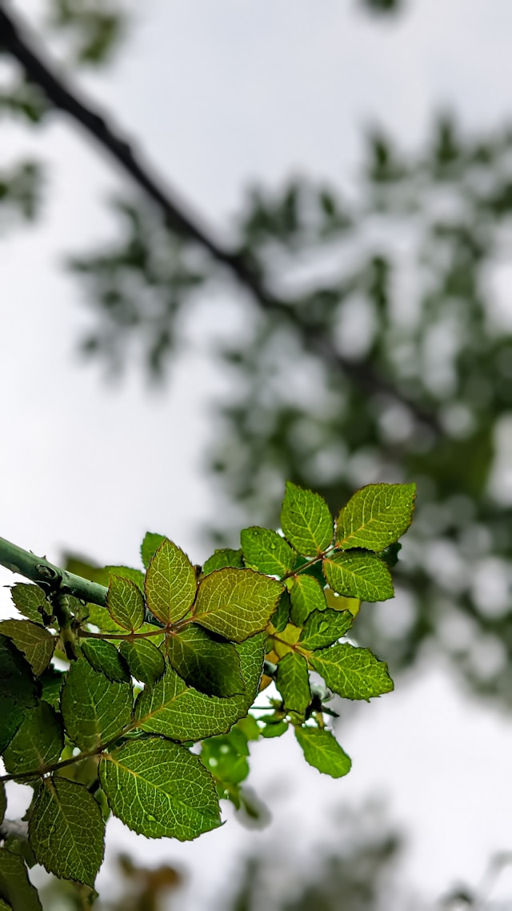
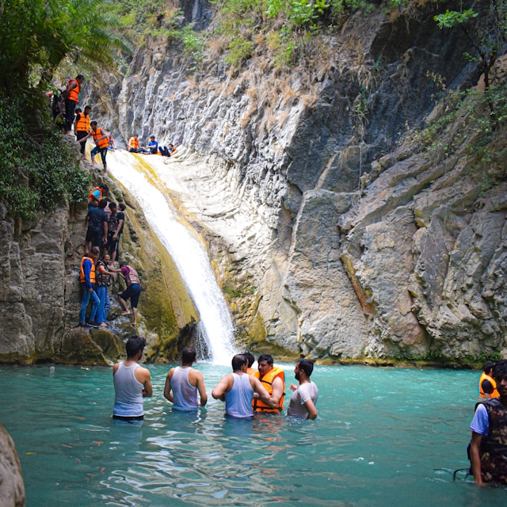
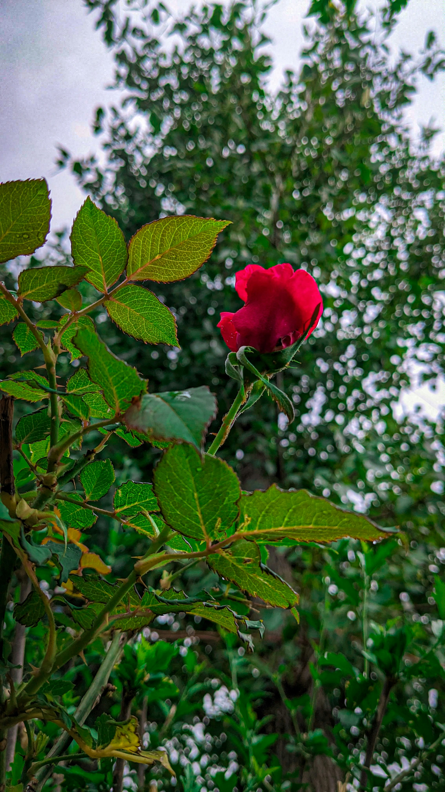

MD Sherajul Blog Website
He is a as digital markter .And also learning Web development sector. Day
by day world also increse your skill.
Read more...
Blogs
Traveling has always been a source of wonder and inspiration. It opens up
a world of possibilities, allowing us to explore new cultures, meet
diverse people, and experience life from a different perspective. Whether
it's a weekend getaway to a nearby town or a months-long backpacking trip
across continents, the journey itself can be as rewarding as the
destination.
1. The Thrill of Exploration
One of the most exciting aspects of travel is the thrill of discovering
the unknown. Stepping into a new place, hearing a different language,
tasting unfamiliar food—every moment feels like an adventure. Each new
location, whether it’s a bustling city or a quiet village, offers its
own unique story and charm. From iconic landmarks like the Eiffel Tower
or the Great Wall of China to hidden gems such as a secluded beach in
Southeast Asia, every destination has something special to offer.
2. Connecting with Cultures
Traveling allows us to break away from our daily routines and immerse
ourselves in new cultures. By interacting with locals, learning about
their customs, and participating in their traditions, we gain a deeper
understanding of the world. These cultural exchanges often lead to
meaningful connections and friendships that can last a lifetime.
Moreover, travel can help broaden our worldview, making us more
empathetic and open-minded. By experiencing life in different parts of
the world, we begin to see that, despite our differences, we share
common human experiences—love, family, work, and aspirations.
3. The Healing Power of Nature
For many, travel is not just about seeing new places, but also about
reconnecting with nature. Escaping into the wilderness, whether it’s
hiking through lush forests, swimming in crystal-clear lakes, or camping
under a sky full of stars, offers a sense of peace and rejuvenation.
Nature has a remarkable way of calming the mind and reminding us of the
simplicity and beauty of life. Destinations like the Swiss Alps, the
Grand Canyon, or the serene rice terraces in Bali offer not just
picturesque views, but an opportunity to reflect and recharge.

4. Adventure and Personal Growth
Every journey, big or small, has the potential to change us. When we
travel, we step out of our comfort zones, face challenges, and overcome
obstacles. Whether it's navigating through a foreign city, trying a new
language, or embarking on a physically demanding hike, these experiences
build confidence and resilience. Traveling can also teach us valuable
life lessons. It encourages adaptability, patience, and problem-solving
skills. More importantly, it opens our minds to new ways of thinking and
living, helping us grow both personally and emotionally.

5. Creating Lifelong Memories
The memories made during travels are often the ones we cherish the most.
Whether it’s a solo adventure, a romantic trip, or a family vacation,
the moments spent exploring new places leave a lasting impact.
Photographs may capture the beauty of a sunset or the excitement of a
bustling market, but the feelings of joy, wonder, and discovery stay
with us forever.

Conclusion
Travel is more than just a physical journey; it's a journey of the mind,
heart, and soul. It expands our horizons, connects us with new people
and places, and enriches our lives in ways we never thought possible.
So, pack your bags, book that ticket, and embark on your next adventure.
The world is waiting, and the experiences you gain will be priceless.